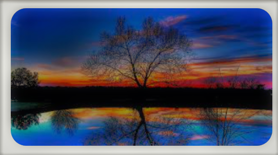

Page 7
The Unity.
A new era of every species is always awaiting to enter in this world either by evolution of species or from a restart
from the beginning.
For example, in the beginning, it is started from Jurassic period when the dinosaurs
lived for many millions of years.
But also, some evolution is also happened at those time, and after that period; like the evolution of human and
other animals from prehuman stage or monkey family to humans.

But whatever be happening, we must not forget that everything is connected, if something happens to anyone,
it will have more worth, that can't be payback at any cost, if the time gets away.
Previous
Name : Tejashvi Anand
Class : 10
Session : 2022-23
ID : 9559